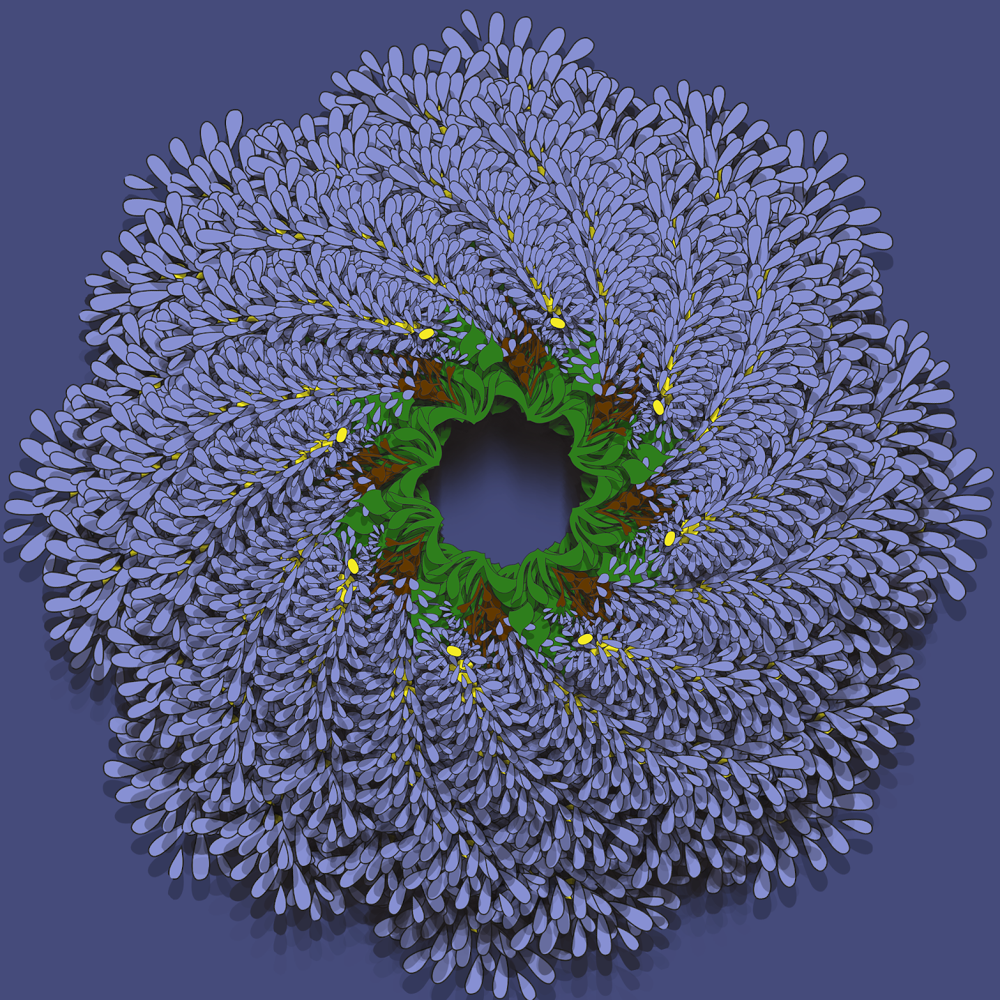

Art Work

Artist Statement
I made this collage with actual photos of me. I started by looking for photos I felt that actually had some symbolism to me. I used my own pictures but I used a filter over them. I included pictures of myself because I really didn’t find any online that were calling my name. I think my collage matched my aesthetic because It’s me in the photos but because it shows how I carry myself. I always try to make sure life is the way I wanted it to be. It gives me security and calmness.My collage also show’s How I try to make life a bit better even with the bad moments.

Artist Statement
My whole idea was to make myself a pixel character. Short hair,brown eyes, wearing a red shirt. I used the paint tool,and The pencil tool in my project. My character looks like it will belong in animal crossing. Their purpose in the game would be to present a character someone can build and interact with on the game.

Artist Statement$
We made this project with Photoshop. We all choose an outline of something. I chose a flower. After we chose this object we had to choose some colors and paint the object with the paint bucket. The color I used were Purple,Yellow,and Green. After we used The transform button then rotated every time for the duplicated object. In Conclusion my shape became like a Wreath. The purple being the leafs of the wreath, The green and yellow being the start of the Wreath.